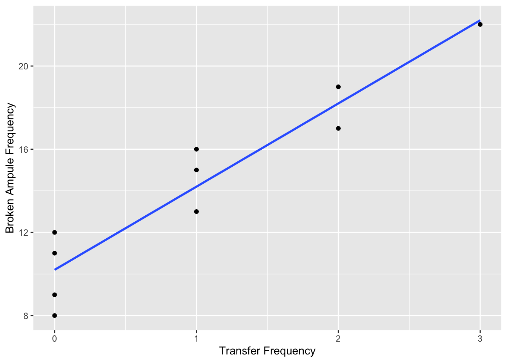

airfreight <-
tibble(
x = c(1, 0, 2, 0, 3, 1, 0, 1, 2, 0),
y = c(16, 9, 17, 12, 22, 13, 8, 15, 19, 11)
)Ch. 1 HW
| i: | 1 | 2 | 3 | 4 | 5 | 6 | 7 | 8 | 9 | 10 |
|---|---|---|---|---|---|---|---|---|---|---|
| \(X_{i}\): | 1 | 0 | 2 | 0 | 3 | 1 | 0 | 1 | 2 | 0 |
| \(Y_{i}\): | 16 | 9 | 17 | 12 | 22 | 13 | 8 | 15 | 19 | 11 |
A substance used in biological and medical research is shipped by airfreight to users of cartons of 1,000 ampules. The data below, involving 10 shipments, were collected on the number of times the carton was transferred form one aircraft to another over the shipment route (X) and the number of ampules found to be broken upon arrival (Y). Assume that first-order regression model (1.1.) is appropriate.
airfreight# A tibble: 10 × 2
x y
<dbl> <dbl>
1 1 16
2 0 9
3 2 17
4 0 12
5 3 22
6 1 13
7 0 8
8 1 15
9 2 19
10 0 11- Obtain the estimated regression function. Plot the estimated regression function and the data. Does a linear regression function appear to be a good fit here?
airfreight.lm <- lm(y ~ x, data = airfreight)airfreight.lm
Call:
lm(formula = y ~ x, data = airfreight)
Coefficients:
(Intercept) x
10.2 4.0 summary(airfreight.lm)
Call:
lm(formula = y ~ x, data = airfreight)
Residuals:
Min 1Q Median 3Q Max
-2.2 -1.2 0.3 0.8 1.8
Coefficients:
Estimate Std. Error t value Pr(>|t|)
(Intercept) 10.2000 0.6633 15.377 3.18e-07 ***
x 4.0000 0.4690 8.528 2.75e-05 ***
---
Signif. codes: 0 '***' 0.001 '**' 0.01 '*' 0.05 '.' 0.1 ' ' 1
Residual standard error: 1.483 on 8 degrees of freedom
Multiple R-squared: 0.9009, Adjusted R-squared: 0.8885
F-statistic: 72.73 on 1 and 8 DF, p-value: 2.749e-05Anova(airfreight.lm, type = "III")Anova Table (Type III tests)
Response: y
Sum Sq Df F value Pr(>F)
(Intercept) 520.2 1 236.454 3.178e-07 ***
x 160.0 1 72.727 2.749e-05 ***
Residuals 17.6 8
---
Signif. codes: 0 '***' 0.001 '**' 0.01 '*' 0.05 '.' 0.1 ' ' 1The estimated regression function is \(Y = 10.2 + 4X\)
ggplot(aes(x = x, y = y), data = airfreight) +
geom_point() +
geom_smooth(method = 'lm', se = FALSE) +
xlab("Transfer Frequency") +
ylab("Broken Ampule Frequency")`geom_smooth()` using formula = 'y ~ x'
Based on the observation of the best fit line obtained by least squares criterion, the linear regression function appears to be a good fit that showed a positive linear relationship between the number of times the carton was transferred form one aircraft to another over the shipment route (X) and the number of ampules found to be broken upon arrival (Y).
Furthermore, the plot shows that more cartons broke the more they were transferred.
- Obtain a point estimate of the expected number of broken ampules when \(*X* = 1\) transfer is made.
Fitted values
airfreight.lm$fitted.values 1 2 3 4 5 6 7 8 9 10
14.2 10.2 18.2 10.2 22.2 14.2 10.2 14.2 18.2 10.2 Prediction
predict(airfreight.lm, data.frame(x = 1)) # m$coefficients%*%c(1,55) 1
14.2 airfreight.lm$coefficients%*%c(1, 1) [,1]
[1,] 14.2The expected number of broken ampules, when one transfer is made (\(X = 1\)), is 14.2. A point estimate of the mean number of times the carton was transferred form one aircraft to another over the shipment route at \(X = 1\) is \(\widehat{Y} = 10.2 + 4(1) = 14.2\)
Prediction
predict(airfreight.lm, data.frame(x = 2)) # m$coefficients%*%c(1,55) 1
18.2 airfreight.lm$coefficients%*%c(1, 2) [,1]
[1,] 18.2The increase in the expected number of ampules when there are two transfers (\(X = 2\)) is four, 18.2, compared the compared to the expected number of broken ampules, when one transfer is made (\(X = 1\)) is 14.2. This makes sense because the slope of the model, \(\beta_{1}\) is 4.
Verify that your fitted regression line goes through the point \((\overline{X}, \overline{Y})\).
airfreight.lm$coefficients%*%c(1, mean(airfreight$x)) [,1]
[1,] 14.2Mean of x, the number of times the carton was transferred form one aircraft to another over the shipment route.
mean(airfreight$x)[1] 1Mean of y, the number of ampules found to be broken upon arrival.
mean(airfreight$y)[1] 14.2The means of x and y are 1 and 14.2, respectively, which the best fit line passes through as evidenced by viewing the fitted values in R:
airfreight.lm$fitted.values 1 2 3 4 5 6 7 8 9 10
14.2 10.2 18.2 10.2 22.2 14.2 10.2 14.2 18.2 10.2 Refer to the Airfreight breakage Problem 1.21.
- Obtain a residual for the first case. What is its relation to \(\epsilon_{1}\)?
Properties of Residuals
The value for the first residual is 1.8.
- Compute \(\sum \epsilon_{i}^{2}\) and MSE. What is estimated by MSE?
Estimation of error variance
A point estimate of \(\sigma^{2}\) is MSE = 2.2.
Explanation of the MSE can be given by the sum of squares decomposition:
The decomposition of the total variation of variable Yinto two parts in order to test the significance of the regression model: (1) the variation explained by the model and (2) the residual variation.
These two parts are compared using the F statistic.
The decomposed variation is based on the sum of squared deviations form the mean, or the sum of squares:
\(SS_{tot}\) = total sum of squares = \(SS_{tot} = \sum(Y_{i} - \widehat{Y})^2\), which describes the total variation of the variable Y.
The regression sum of squares, or model sum of squares, is \(SS_{reg}\):
\(SS_{reg} = \sum(\widehat{Y} - \overline{Y})^2\) represents the variation of Y, which is explained by the fitted regression model.
The residual sum of squared (\(SS_{E}\), also known as the error sum of squares), \(SS_{E} = \sum(Y_{i} - \widehat{Y}_{i})^2\) corresponds to the Y variation not explained by the model.
\(SS_{tot} = SS_{reg} + SS_{E}\)
The degrees of freedom corresponding to individual estimated components of Y variation:
\(DF_{tot} = n - 1\) for degrees of freedom corresponding to \(SS_{tot}\).
\(DF_{reg}\) = number of estimated parameters - 1 for degrees of freedom corresponding to \(SS_{reg}\).
\(DF_{reg}\) is therefore equal to 1 for a simple linear regression model with two estimated parameters.
\(DF_{E} = DF_{tot} - DF_{reg}\) for the residual sum of squares: \(DF_{E}\) is therefore equal to \(n - 2\) for simple linear regression.
The degrees of freedom are additive, as for the sum of squares.
Mean square (MS) values can be obtained by dividing the a sum of squares by its corresponding number of degrees of freedom, e.g., \(MS_{E} = SS_{E}/DF_{E}\).
If \(H_{0}\) is true, i.e., when X and Y are independent, both \(MS_{reg}\) and \(MS_{E}\) are estimates of the variance of the dependent variable Y.
If the values are dependent, \(MS_{reg}\) increases and \(MS_{E}\) decreases.
The ratio \(F = MS_{reg}/MS_{E}\) can therefore be used for regression model significance, with assumed F distribution when \(H_{0}\) is correct.
The sum of squares are also used to calculate the coefficient of determination, \(R^{2}\).
\[R^{2} = SS_{reg}/SS_{tot} = 1 - SS_{E}/SS_{tot}\] The \(R^{2}\) coefficient estimates the proportion of explained variation out of the total variation.